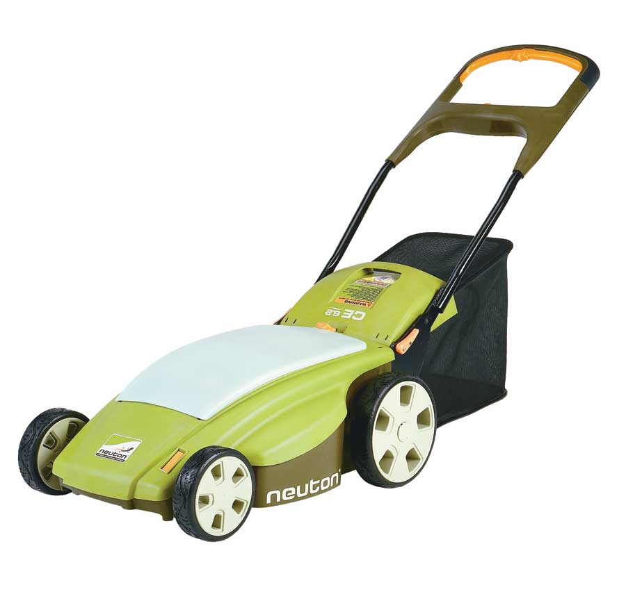
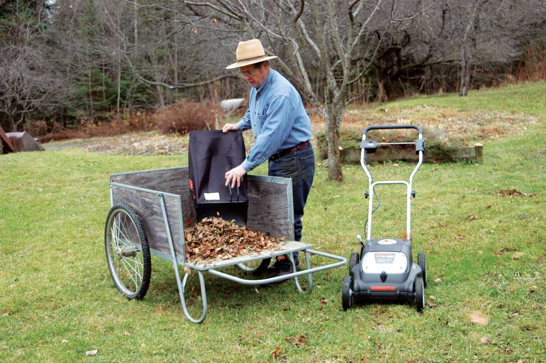
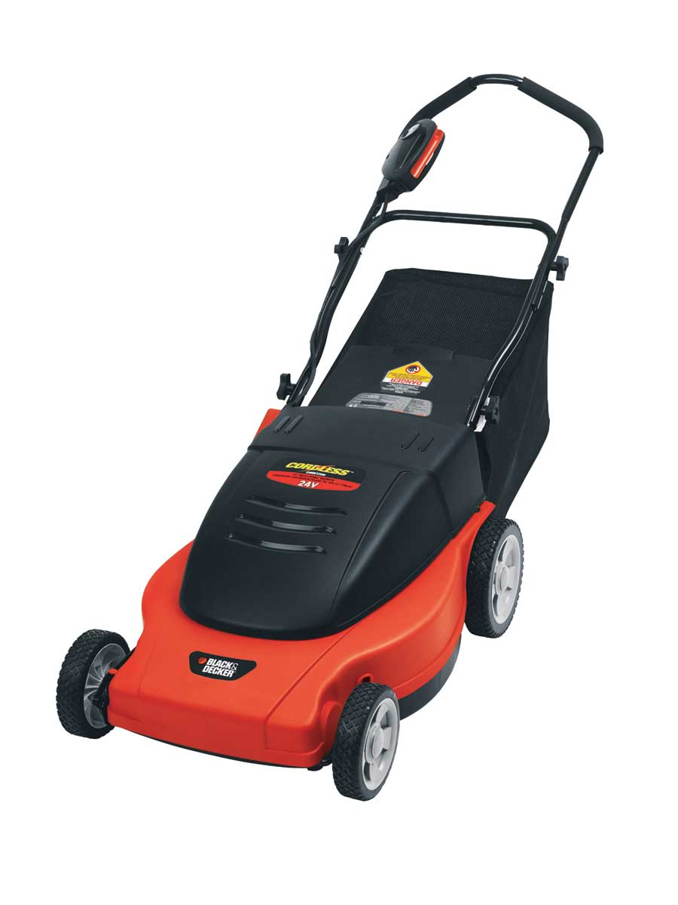
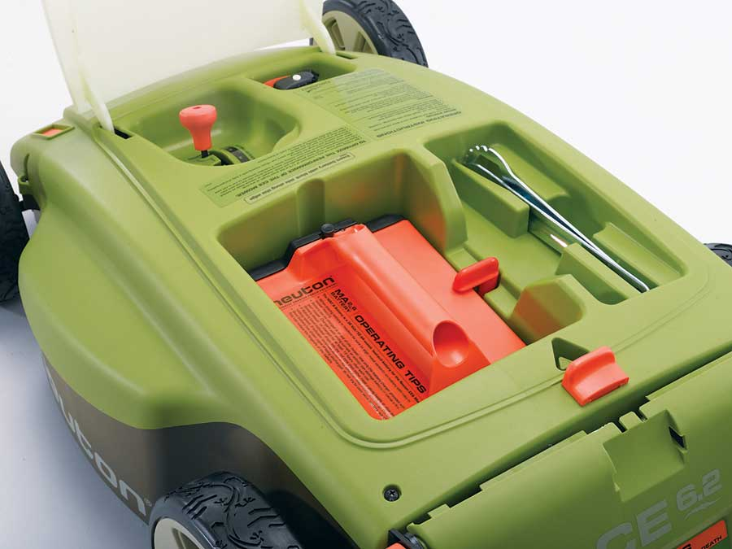
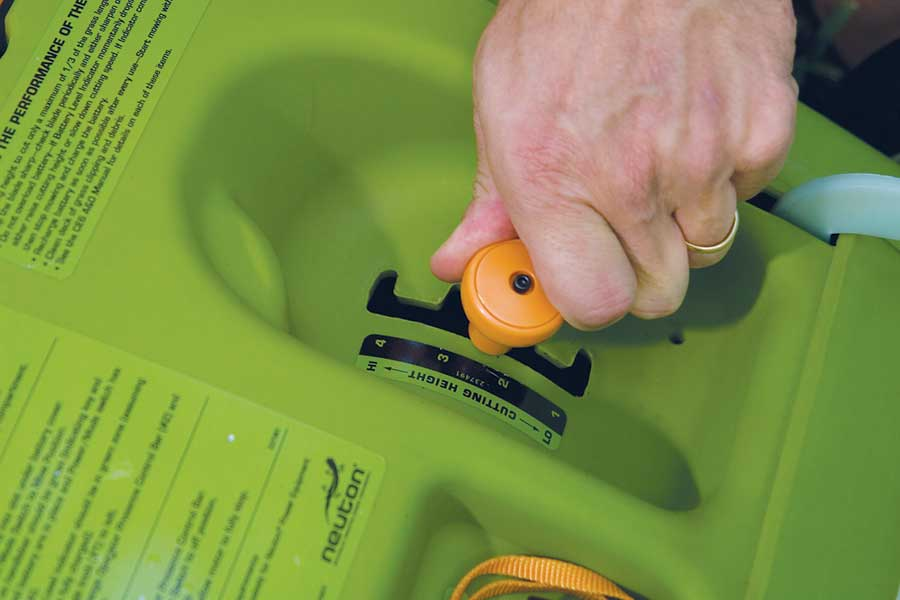
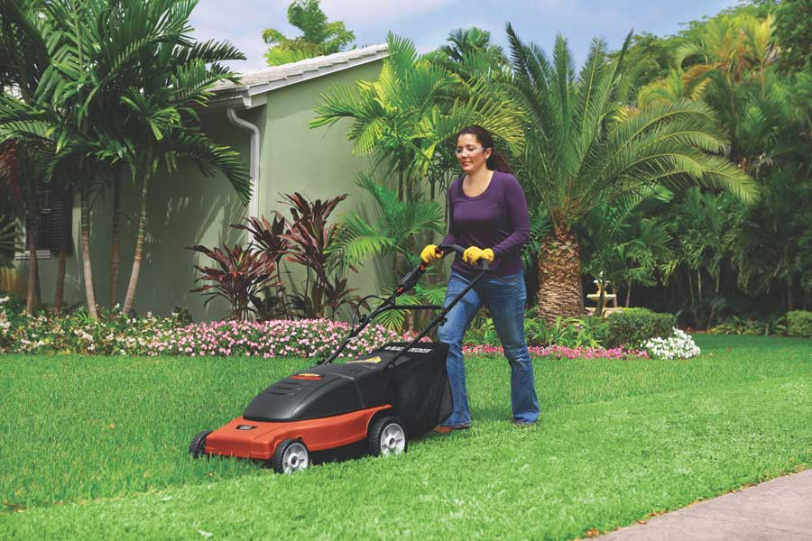

As fossil fuels become more scarce (and expensive!), it’s a wise idea to consider more seriously how we use these resources. Americans use more than 800 million gallons of gasoline every year to mow lawns. That may be just a fraction of the 142 billion gallons used annually for all gasoline engines in the United States, but it’s a big source of pollution. Operating a lawn mower for one hour produces as much pollution as driving a car 93 miles.
Enough is enough! A couple years ago, I decided I could no longer ignore the pernicious environmental effects I was causing by mowing my lawn with a gas-powered machine. So I decided to switch to cordless electric (battery-powered) mowers, and Mother Earth News asked me to try out a range of them.
Electric mowers can be recharged using electricity generated by renewable energy, such as solar or wind. But even if you use electricity generated from burning fossil fuels, it creates less pollution than would come from using a gasoline-powered mower.
My lawn is not a refined and perfect middle-of-the-suburbs lawn. It’s pretty much what grew up of its own accord when the grading was finished around the house, supplemented here and there with some grass seed where nothing seemed to volunteer for ground-cover detail. If left to its own preferences, my lawn would probably be a hayfield. But it actually looks nice, if I keep it mowed. And it is a good test plot for lawn mowers. If a mower can make my lawn look good, it can handle any normal lawn with ease.
The summer of 2008 was challenging for testing lawn mowers. It rained, it rained and then it rained some more. I was rarely able to mow the lawn when the grass was the right height for mowing. Almost every time I had a window of opportunity for mowing, the grass was too long, and it presented a challenge that some electric mowers met much better than others.
Just a few years ago, there were only a couple cordless mowers to choose from. Now, there are about six, of which I tested four: the Black & Decker CMM1200, the Neuton CE 5.2, the Neuton CE 6.2 and the Remington MPS6017A. All have all-wheel height adjustment with one control and can operate in mulching mode (chopping up the clippings instead of blowing them out the side) or bag mode (collecting the clippings in an attached bag). The Black & Decker and Remington models also have a side-discharge option (clippings are blown out the side), which is standard on the Neuton models. Performance for all the mowers was best in mulch mode.
After a summer of using electric mowers, there’s no way I’ll go back to gasoline. All of the mowers mowed at least as well and generally better than any gas mower I’ve used. They’re also much quieter, easier to start, and easier and cheaper to maintain. Plus, they’re more fun to use.
All the mowers should run for about an hour on a full charge. That’s variable, though: In difficult conditions the charge doesn’t last as long. And as batteries age, they hold a charge for shorter periods of time. Most of the batteries can be fully charged in eight to 12 hours when they’re new, but charging can take up to 24 hours for older batteries.
At 76 pounds, the Black & Decker CMM1200 is the heaviest mower I tested. It’s a bit of a load to push up the sloped parts of my lawn - so it’s most fun to use on fairly level ground.
If you’re concerned only with results, only need the mulching mode and don’t care about the weight, this model is the best choice.
Even if I’ve let the grass get too long, this mower chops it into small pieces and makes it disappear. I think this is in large part because the machine keeps itself free of grass buildup on the deck underside, even in damp conditions. I tested the CMM1200 in tall, wet grass, and it did well. It was superior to my gas mowers under these conditions and better than any of the other cordless mowers. Cutting height of the CMM1200 is easily adjustable to 31⁄2 inches maximum.
Although it’s rated at 24 volts (the same as the smaller Neuton model), the Black & Decker seemed to maintain blade speed in heavy cutting just as well as the 36-volt Neuton and the 60-volt Remington. It seems that there is more to useful power than simply voltage rating. (See Cordless Electric Mowers: Facts and Figures.)
The Black & Decker battery is not easily removable, so you can’t pop in a spare if you run out of juice before the job is done. But the charger has a nice feature: A red light changes to a green light when the battery is fully charged.
The side discharge chute is an option that wasn’t supplied with the machine I tested, but the mower works so well in mulch mode that I can’t see a reason to use the side discharge. The bagger works well, too.
The 60-pound MPS6017A electric mower from Remington is unique in that it can be run either plugged in or cordless. Most of my lawn is a long way from an electrical outlet, and I don’t like to deal with a tether as I mow, so I didn’t try the plugged-in mode. There is a “power burst” in plugged-in mode that increases tip speed of the blade for heavy cutting conditions.
The blade, and therefore cutting width, is notably smaller (17 inches) than the Black & Decker and the Neuton 6.2 (both 19 inches). You can adjust cutting height to a maximum of 31⁄2 inches.
“It looks like a little sports car,” my wife said on first seeing this mower. And it handles pretty much like a little sports car, too. It’s easy to maneuver around trees and bushes, to U-turn at the end of a straight run, or to snake along a curving lawn edge.
The battery charge light is on the control panel of the mower. It blinks when charging and glows steadily when charging is complete.
If the grass is pretty long, I sometimes end up with clumps of grass deposited on the lawn when in mulching mode or a plugged chute in side-discharge mode. (I’m really asking more here than the mower is supposed to be able to do well, but that’s how it sometimes is in the real world.)
(As of press time, DESA, Remington’s parent company, had recently filed for bankruptcy. Availability of Remington mowers is uncertain at this time. - Mother)
The mower I tested was actually the 2007 version of the 5.2, called the 5.1, but it’s identical to the 2008 model. It weighs the least of any tested mower - 48 pounds - and is well-balanced and easy to maneuver. This mower and the larger Neuton 6.2 have an accessory string-trimmer attachment. It works well where the ground is level and there is no sudden drop-off.
The 5.2 has the shortest blade, and therefore cuts the narrowest swath (14 inches), so it would seem that mowing should take longer with this unit than with the other three. But cutting width is, in the real world, not the only factor determining how long it takes to mow a lawn - especially a lawn with ups and downs and curving borders and lots of things to mow around. That’s where a lightweight, well-balanced, maneuverable machine has the advantage: I haven’t checked with a stopwatch, but I’m not spending significantly more time with this unit than I do with the bigger machines.
The Neuton’s battery is easy to put in and take out, and can be charged either in or out of the mower. You can switch to a spare battery if the end of the charge comes before the end of the lawn.
Mulch and side discharge both work well in grass that’s cut when it ought to be. It works well in the bagging mode, too. Cutting height adjusts to a maximum of 3 inches. That’s the good news.
Grass clippings tend to build up on the deck underside of this mower. But they’re easy to clean off, and usually don’t affect mower performance. In mulching mode, when trying to cut tall grass, both Neutons would develop a large clump of cut grass above the blade that would eventually cause the blade to stop.
When I first started my test, this was my favorite mower. It’s a good compromise between cutting width and weight, plus it’s fairly easy to maneuver. The battery is easy to put in and take out. This mower has a nice feature all the others lack - a gauge that tells you how much juice you have left in the battery. Also handy: The tools you need to remove the blade for sharpening or replacement are supplied with the mower and stow on the machine. One of the wrenches doubles as a scraper to remove built-up grass clippings from the deck underside. This mower works well in bagging mode and is my choice for chopping and gathering autumn leaves.
If the grass grows too tall before mowing, cut grass builds up under the deck. In mulching mode, clumps of grass drop on the lawn; in side-discharge mode, the discharge chute plugs.
There are differences among the four cordless mowers I tested, but every one of these mowers is a perfectly adequate replacement for a gasoline-powered push mower.
The bigger part of lawn maintenance is the mower’s job. But a really good-looking lawn will need some neatening around the edges. And a homestead generally needs a tool that can keep weeds and grass down around gardens and pastures. These are jobs for a string trimmer, aka a weed whacker.
Although most of them are gas-powered, there are some plug-in and cordless trimmers. Most of my trimming is away from electrical outlets, and I don’t like dragging a cord around. So I’ve considered only cordless models as replacements for my gas-powered unit.
The smaller trimmers (18 to 24 volts) are able to deal with lawn edges and cutting around foundations, posts and trees. If that’s all you need to do, these will suffice. They’re not as fast or as powerful as a small gas trimmer, but they’re adequate and don’t pollute. I tried two models in this class and liked the Remington better: good balance and easy to use. Price: $92. (The other was the YardStick, $85.) But these little ones can’t handle cutting back tall grass and tough plants, such as the goldenrod and milkweed growing beneath the electric fence around my garden.
Black & Decker’s 36-volt string trimmer can. This one is in a different league from the 18- and 24-volt single-string machines. Big weeds are no problem; it really does the job well enough to let me retire my gas-powered trimmer. Run time at full “throttle” is not long - only about eight minutes. Price: $199.
|
 NEUTON The Neuton 6.2 |
 SYLVIA FERRY SMITH Most cordless mowers can mulch clippings and leaves - or collect them in a bag. |
 BLACK & DECKER The Black & Decker CMM1200 |
|
 NEUTON Tools for removing the blade of the Neuton 6.2 are stored right in the machine. |
 NEUTON Moving one knob adjusts mowing height of the Neuton 6.2. |
 BLACK & DECKER Mowing with a cordless electric mower means no fumes and minimal noise. |